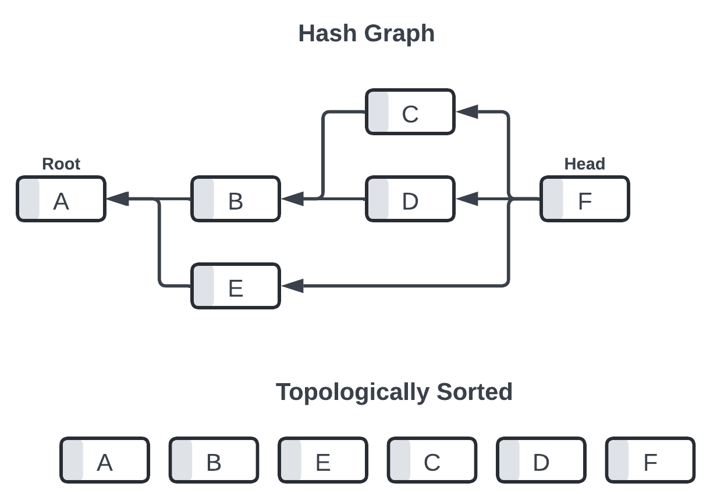
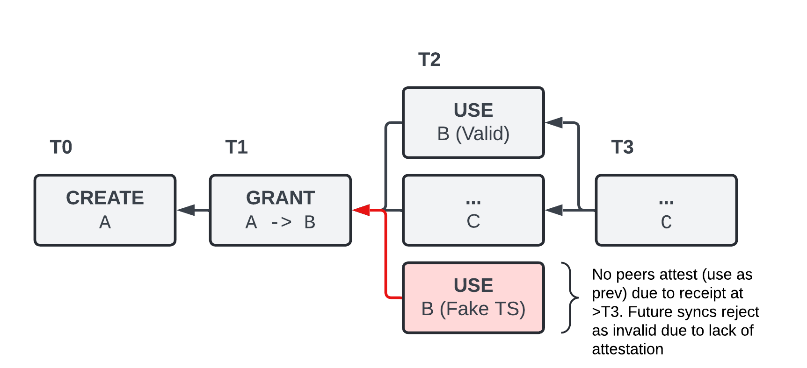

I started sketching a peer to peer chat protocol, yuzu. my thesis is that it's possible to build a protocol that:
from a user perspective, yuzu behaves as follows:
functionally, yuzu is based on the following primitives:
identity in yuzu is straightforward if you're familiar with other p2p networks. each peer generates a long term ed25519 public/private key pair. a peer is identified, both within the network and in terms of content authorship, by their public key.
when two peers connect, they generate ephemeral x25519 key pairs for encryption (signed by their ed25519 keys for proof of identity). these are used in a diffie-hellman exchange, after which a chacha20poly1305 secret is used for symmetric encryption.
hash graphs are the means for providing a causal ordering over events within yuzu.
each entry in a hash graph has the following structure:
type Entry struct {
ID hash.Hash // sha256(EntryData, signature)
EntryData
Signature []byte // sign(sha256(EntryData), signer_private_key)
}
type EntryData struct {
Previous []hash.Hash
Sequence uint64 // per pubkey incrementing id
Content []byte
CreatedAt uint64 // unix timestamp of entry creation
Author ed25519.PublicKey
}
note that each entry may point to multiple previous entires in the graph. entries that point to more than one parent are effectively performing a "merge operation" of log state within the topological ordering.
ordering is defined by a deterministic topological sort over the graph, with ties broken by alphabetical sorting the entry hashes.
groups in yuzu are defined by a central, per group "operation" hash graph that is permanent and used for capabilities management, access control, and CRUD operations over channels.
the operation graph is initialized by a user with a message as follows:
{
"type": "OPERATION_CREATE_GROUP",
"group_metadata": {
"title": "My cool group",
"description": "A group for my friends to chat together"
}
}
an OPERATION_CREATE_GROUP operation will have no Previous entry defined. the ID (hash) of this entry will also be used as the GroupID from now on, uniquely identifying each group.
the group owner may then create new entries in the operation graph to grant or revoke capabilities, create channels, and update metadata.
for example, "inviting" another user to the group can be achieved via the JOIN capability.
{
"type": "OPERATION_GRANT_CAPABILITY",
"capability_data": {
"type": "JOIN",
"granter": "/UVrV7KeYPM18mwy6RzlOFe/khd0QRq5vGsTu/LU758=",
"grantee": "y2UmRYuNtib7zR4USNlTUExL2ic3RXXh70ezlEtol7E=",
"valid_from": 1717278799,
"valid_until": 1717909333
}
}
note the use of unix timestamps for bounding the use of this operation. this is obviously not a perfect solution given the dynamics of peer to peer systems, as authors could attempt to use a capability that was revoked or expired by manufacturing a new entry with a timestamp and causal dependency set "backwards in time". this is not distinguishable from legitimate but stale messages due to network availability and offline data sync.
to mitigate this, we tweak the availability and consistency expectations specifically for the operation DAG, where nodes define an acceptance boundary for new entires in terms of the claimed timestamp and the node's current clocktime. to allow for historic sync, we also define alternative validity under "depth of attestations" (previous links from other peers).
attestations of entry validity (that they are non-byzantine, aka received within a timely window) may be explicitly entered into the DAG, but they may also be implicit via subsequent operations treating these operations as a dependency (ancestor of one of their own entries).
while not a perfect solution, I posit that this pseudo-finality strikes a reasonable tradeoff between byzantine protection, offline sync, and no required strong consensus mechanism.
the following parameters may be made tunable per group or per implementation:
for a flagship implementation, I propose the following: